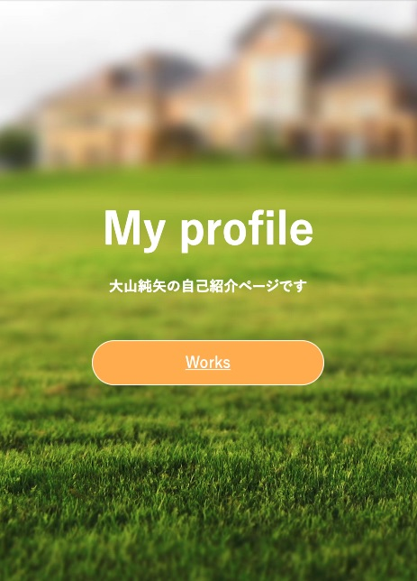

Profile
Website Production 基本的なHTML CSS JavaScriptを用いてWEB制作が可能です
私が職業を選択する上で
もっとも大切にしている理念は
多くの人に役に立てるかどうかです。
私は介護でアルバイトをしています。
人の役に立てる良い職業だと思っています。
しかし、圧倒的な人手不足とアナログな業務形態により
日々の業務で手一杯になってしまい
利用者の方に楽しんで生活を送ってもらうという
本来の目的から遠ざかってるように思えます。
テクノロジーを用いて業務を効率化することができれば
この現状を変えられるのではないかと思い
エンジニアという職業に魅力を感じています。
社会を豊かにするために技術を学び、提供していきたいと思っています。
基本的なHTML CSS JavaScriptを用いてWEB制作が可能です
条件に合わせてPCを紹介するチャットボットを制作しました。
<使用技術>
・React
・Redux
・react-router
・Material-Ui
・Firebase Hosting
・Firebase Authentication
・Cloud Firestore
名前を入力すると入力された名前に応じて
良いところを診断してくれる
アプリケーションです。
<使用言語>
・Node.js
・HTML CSS
<使用技術>
・Firebase Hosting